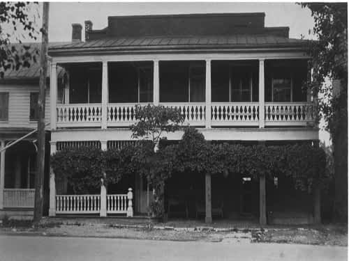

5336 Main Street
On the 1st of June 1864 a pivotal event took place in front of this building. On that day Major Joseph K. Stearns of the 1st New York “Lincoln” Cavalry came to Newtown with his men to carry out orders to burn the town. It had all started over a week earlier on the evening of the 23rd of May, when partisan Confederate sympathizers from Maryland fired on a Federal wagon train from horseback. As they rode away they shot one Union soldier and escaped. In the confusion that followed several the Federal troops unhitched their wagons, left them on the street in the town and rode the horses away to Winchester. In retaliation, and without knowing all the facts, Union General David Hunter (1802-1886) ordered Major Timothy Quinn of the 1st New York Cavalry to burn the houses from which the shots were fired as a warning to the citizens of Newtown not to attack any more Federal wagon trains. In turn Major Quinn burned at least three houses, including the Methodist parsonage and a brick house owned by a local entrepreneur and slave trader. Ironically, Major Quinn burned the parsonage because one of the Federal wagons had been left on the street in front of that house by an African American man who had tried to move it to his own home but gave up on his plan before reaching his goal. It was also at this time that General Hunter issued a written proclamation saying that he would order the burning of the town if any more of his soldiers and wagons were attacked.
By the evening of the 29th the people of Newtown were the unfortunate bystanders once again when Confederate Colonel Harry Gilmor (1838-1883) and his partisan rangers attacked a Union wagon train guarded by 83 men of the 15th New York Cavalry at Stephens Run near the southern end of town. Despite the pleas of at least one resident, Eliza Kern Steele (1808-1882), Colonel Gilmor attacked the wagon train within the town boundaries. After it all was over, Colonel Gilmor and his men had killed three, wounded nine, taken the others as prisoners and burned most of the wagons at the southern end of the town. Colonel Gilmor then learned of General Hunter’s threat to burn the town if any more wagon trains were attacked. He was shocked but quickly wrote a note addressed to General Hunter. In this note he said he held thirty-five men and six officers, and Gilmor promised to hang all of them and send General Hunter their bodies if Hunter carried out his threat to burn the town. This note was then nailed to the outside brick wall of this store.
The morning of the following day Confederate Colonel John Singleton Mosby (1883-1916) and his men raided the rear guard of another Federal wagon train heading north on the Valley Turnpike just south of town. They killed two of the Federal soldiers and captured five others with their horses and equipment. One of the captured men was reportedly caught in the act of burning a barn south of town. Colonel Mosby’s men brought him to the town’s hotel (the building that today houses the Newtown History Center) and gave this prisoner some breakfast as his last meal. The prisoner was then taken to the burned ruins of the slave trader’s brick house east of town and shot against one of the remaining brick walls.
The 1st of June came with the residents of Newtown scrambling to save as many of their moveable possessions as they could by hiding and burying them in their yards. When Major Stearns arrived in town to execute General Hunter’s burning orders, he and his men were met by the sight of people standing in the doorways of their homes with expressions of despair and helplessness on their faces. Community leaders also met him, protesting the innocence of the townspeople. They disassociated themselves from the attacks by Gilmor and Mosby and spoke of the aid they had given to the wounded Federals in their homes. Compassion may have played a role in Major Stearns’ decision to disobey General Hunter’s orders but he also was made aware of Gilmore’s note and the threat it contained. In exchange for not burning the town, Major Stearns required the people of Newtown to take the oath of allegiance to the Union here in front of this store. In turn, the town was spared and many of the old buildings that would have been burned by General Hunter’s men still stand today in Stephens City.